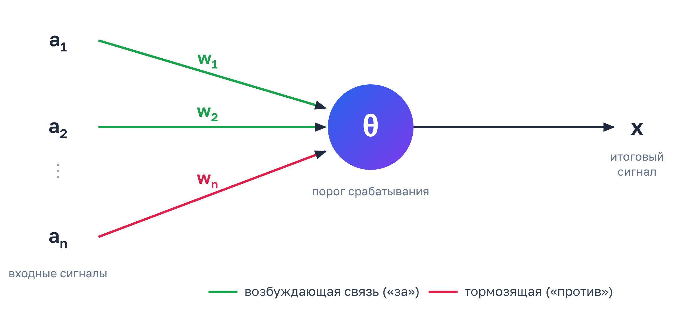
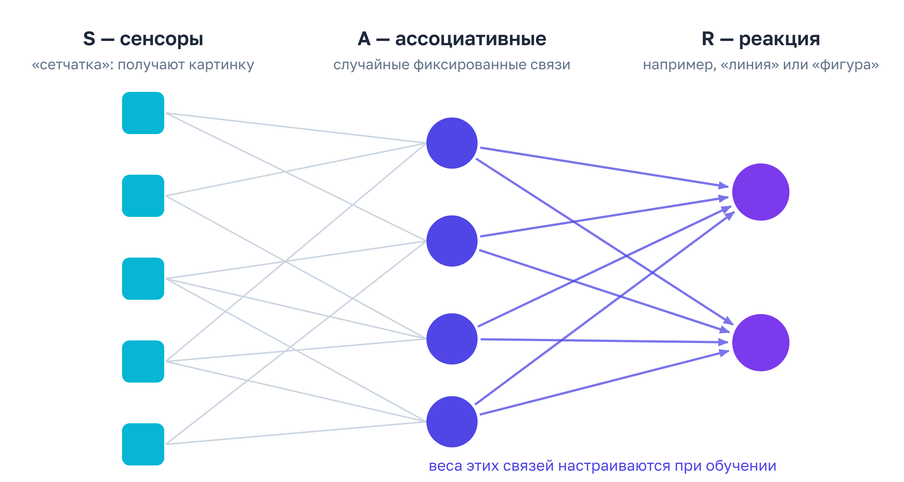

Как появилась и развивалась нейросеть
Путь от первых моделей 1940-х годов до современных систем занял около восьмидесяти лет.
Первые идеи и модель 1943 года
Идея нейронных сетей появилась в середине XX века, когда учёные задумались: можно ли создать машину, которая училась бы на примерах, подобно человеку? Они вдохновлялись работой мозга, хотя искусственные нейронные сети устроены гораздо проще.
Одним из первых шагов стала работа американских учёных Уоррена Мак-Каллока и Уолтера Питтса в 1943 году. Они описали простую математическую модель искусственного нейрона. Это была очень упрощённая схема:

- a — входные сигналы от других нейронов;
- w — веса связей: возбуждающие («за») или тормозящие («против») — так модель принято рисовать в учебниках, в оригинале всё немного проще (см. ниже);
- θ — порог срабатывания;
- x — итоговый сигнал.
Нейрон получает сигналы, складывает их и решает, передать ли результат дальше. Такая модель была далека от настоящего мозга, но показала, что некоторые его принципы можно описать с помощью вычислений. Она ещё не умела учиться так, как современные нейросети, но доказала: из простых элементов можно построить систему, способную выполнять логические операции.
Создатели: Мак-Каллок и Питтс
История этих учёных довольно необычна. Уолтер Питтс был самоучкой из неблагополучной семьи: ещё подростком он сбежал из дома, увлёкся математикой и логикой и даже переписывался с известным философом Бертраном Расселом. Позже он познакомился с Мак-Каллоком, который занимался исследованиями мозга, и они вместе начали работать над логической моделью нервной системы.
В оригинальной модели нейрон не суммировал сигналы с разными весами, а просто подсчитывал, сколько возбуждающих сигналов пришло, и сравнивал это число с порогом; тормозящий сигнал при этом полностью блокировал работу. Поэтому «веса» на схеме выше — это скорее позднейшее обобщение. Механизма обучения у модели изначально не было.
Несмотря на это, их работа сильно повлияла на науку и технику: на неё ссылался Джон фон Нейман, когда описывал архитектуру компьютера, а идея замкнутых «петель» связей повлияла на представления о памяти в сетях. Кроме того, опираясь на эту модель, математик Стивен Клини позже придумал «регулярные выражения», знакомые каждому программисту.
Правило Хебба
В 1949 году канадский психолог Дональд Хебб предположил, что связи между нервными клетками усиливаются, если клетки часто работают вместе. Эта мысль легла в основу идей об обучении нейронных сетей.
Перцептрон и первая «зима»
В 1957–1958 годах американский исследователь Фрэнк Розенблатт создал перцептрон — одну из первых работающих нейросетей, которая могла учиться на примерах:

Она могла учиться различать простые изображения, например линии и фигуры. В то время многие решили, что скоро машины смогут почти так же хорошо думать, как человек.
Однако первые системы оказались слишком простыми. В 1969 году Марвин Минский и Сеймур Паперт показали, что обычный перцептрон не умеет решать некоторые простые задачи. После этого интерес к нейронным сетям сильно уменьшился.
От обратного распространения к глубокому обучению
Новый подъём начался в 1980-е годы. Учёные разработали более удобный способ обучения многослойных сетей — обратное распространение ошибки (в 1986 году его популяризировали Дэвид Румельхарт, Джеффри Хинтон и Рональд Уильямс). Если объяснять просто: сеть сначала даёт ответ, затем сравнивает его с правильным и постепенно исправляет свои внутренние связи. Благодаря этому она могла учиться на примерах, а значит, стало возможно обучать сети из нескольких слоёв. В этот период появились и первые важные системы для работы с изображениями и текстом.
В конце 1980-х и в 1990-е годы нейронные сети стали использоваться в практических задачах. Янн ЛеКун применил их для распознавания рукописных цифр на конвертах и банковских чеках. Для таких задач хорошо подошли свёрточные сети, которые научились замечать простые элементы изображения: линии, углы и формы.
В 1997 году появились сети LSTM — улучшенная версия рекуррентной нейросети. Её придумали, чтобы обычные RNN не «забывали» далёкие по времени события в последовательности. LSTM лучше работали с речью и текстом, потому что могли учитывать то, что было сказано раньше.
Но до настоящего прорыва ещё не хватало двух вещей: большого количества данных и мощных компьютеров. В 2000-е годы интернет начал быстро расти, появились огромные наборы изображений, текстов и записей речи. Одновременно стали широко использоваться графические процессоры, которые могли быстро выполнять множество одинаковых вычислений. В 2006 году исследователи, среди которых был Джеффри Хинтон, показали, что глубокие сети можно эффективно обучать. Так началась новая волна развития, получившая название «глубокое обучение». Такие сети стали называть глубокими, потому что в них было много слоёв.
Переломным моментом стал 2012 год. Сеть AlexNet намного лучше прежних программ распознала объекты на фотографиях. Она училась на множестве картинок и использовала для вычислений мощные графические процессоры. После этого крупные компании и университеты начали активно применять глубокие сети: улучшать поиск в интернете, рекомендации видео и товаров, перевод, распознавание речи, обработку фотографий и управление автомобилями.
В 2014 году появились генеративно-состязательные сети (GAN): в них две нейросети «соревнуются» друг с другом, благодаря чему изображения становятся всё более реалистичными. В 2014–2016 годах нейронные сети научились создавать изображения, переводить тексты и играть в сложные игры. В 2016 году программа AlphaGo победила одного из лучших игроков в го. Это было важно, потому что го считалась слишком сложной для обычного перебора вариантов. Система училась на партиях людей и на собственных играх.
Трансформеры и эпоха больших моделей
В 2017 году исследователи представили устройство нейросети под названием трансформер. Оно оказалось особенно полезным для работы с текстом: такие сети учились учитывать связи между словами в больших отрывках. На этой основе появились крупные языковые модели. В 2018 году появилась модель BERT, которая хорошо понимала смысл слов в контексте. Затем появились GPT и другие модели, способные писать связные тексты, отвечать на вопросы, переводить и кратко пересказывать документы.
В 2020 году модель GPT-3 показала, что большая нейронная сеть может создавать довольно убедительные тексты, хотя иногда ошибается и выдумывает факты. В 2022 году широкий интерес вызвал ChatGPT, который позволил людям общаться с нейросетью в форме диалога. Миллионы людей впервые начали регулярно общаться с нейронной сетью как с собеседником, помощником, редактором или учителем. После этого развитие искусственного интеллекта ускорилось, а нейросети стали появляться в офисных программах, поисковиках, телефонах и творческих сервисах.
В 2023–2026 годах нейронные сети стали лучше работать сразу с несколькими видами информации: текстом, изображениями, звуком и видео. Они научились анализировать документы, описывать фотографии, создавать изображения, музыку, речь и видео, помогать писать программы и искать информацию, а также выполнять цепочки действий. Развиваются и модели, которые тратят больше времени на рассуждение перед ответом. При этом они всё ещё могут ошибаться, неправильно понимать задачу и уверенно выдавать неверные сведения, поэтому важные результаты по-прежнему нужно проверять.
Нейросеть сегодня
Сегодня нейронная сеть — это большая система из множества простых вычислительных элементов, которая учится на примерах. Она не думает так же, как человек, и не обладает человеческим пониманием мира. Она находит закономерности в данных и использует их, чтобы предсказать следующий ответ, распознать объект или создать новый результат.
Описание современного состояния актуально на ноябрь 2026 года: эта область меняется очень быстро, поэтому свежие подробности лучше сверять с актуальными источниками (см. раздел «Что почитать дальше»).
Проверьте себя
1. Кто в 1943 году описал модель искусственного нейрона?
Модель 1943 года — работа Мак-Каллока и Питтса. Розенблатт создал перцептрон позже, в 1957–1958 годах.
2. Что стало переломным моментом в 2012 году?
AlexNet в 2012 году резко улучшила распознавание объектов. AlphaGo — 2016 год, ChatGPT — 2022.
3. В каком году представили архитектуру «трансформер»?
Трансформеры появились в 2017 году и стали основой больших языковых моделей.